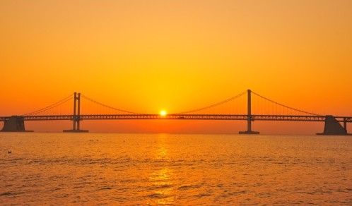

주요 관광지
-

광안리해수욕장
광안리해수욕장은 질 좋은 모래사장이 있고, 지속적인 수질 정화를 실시하여 인근의 수영강에 다시 고기가 살 수 있을 정도로 깨끗한 수질을 자랑하며, 특히 젊은이들이 즐겨 찾는 명소이다. 광안리에서는 해수욕뿐 아니라 독특한 분위기를 자아내는 레스토랑, 카페 등과 시내 중심가 못지않은 유명 패션상가들이 즐비해 있다.
-
해운대블루라인파크
해운대 블루라인파크는 해운대 미포~청사포~송정에 이르는 4.8km 구간의 동해남부선 옛 철도시설을 친환경적으로 재개발한 곳이다. 수려한 해안절경을 따라 해운대 해변열차와 해운대 스카이캡슐을 운행하는 핵심 관광 시설이다.
해변열차 및 스카이캡슐 이용권 구매 가능
-
40계단 문화관광테마거리
40계단문화관광테마거리는 국민은행 중앙동지점에서부터 40계단을 거쳐 40계단문화관과 팔성관광까지 약 450m가량에 이르는 거리를 말한다. 한국 전쟁 시 피난민의 애환과 향수가 담겨있는 유서깊은 40계단 주변을 50~60년대 분위기에 맞도록 재현하여 추억을 회상할 수 있게 함으로써 새로운 관광명소로 육성하고자 조성하였다.
-
BIFF 광장
남포동 극장가가 극장들로 자리잡게 된 것은 8.15해방 후 극장이 한 두 군데 생기면서부터 1960년대에 이르러 20여개소의 극장이 이 곳에 밀집되어 있었던 것에서 시작된다. 지난 1996년부터 부산국제영화제가 개최되면서 극장가를 새롭게 단장하고 그 일대를 PIFF 광장으로 명명하게 되었다.
맛집 및 카페
-

파스타 보이즈
양식
주소 | 부산 동래구 석사로34번길 21 1층 -

해목
일식
주소 | 부산 해운대구 구남로24번길 8 -

웨이브온 커피
카페
주소 | 부산 기장군 장안읍 해맞이로 286